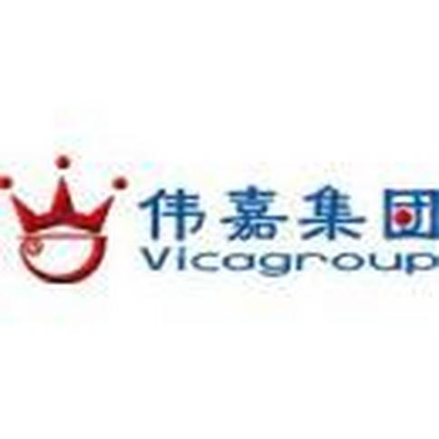
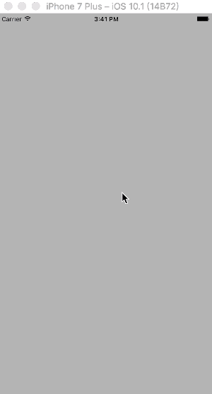
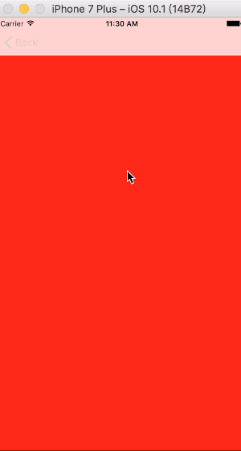
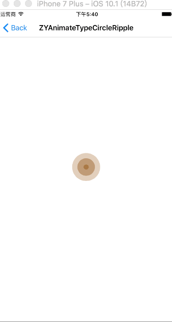
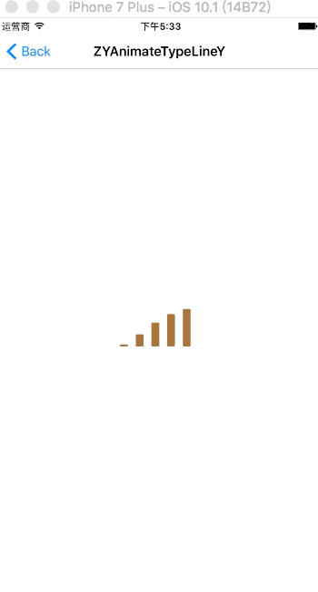
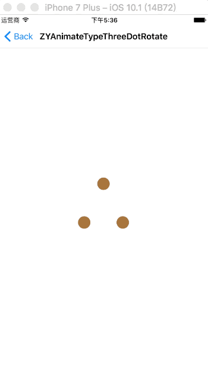
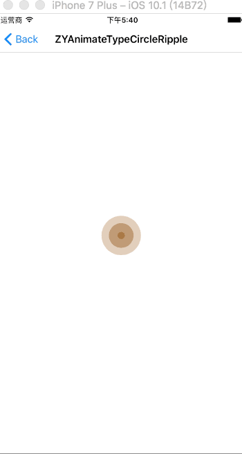
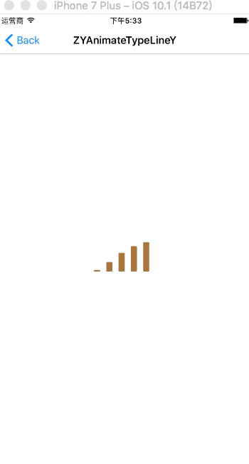
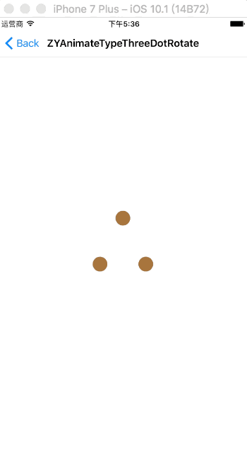

陈正英
ethanCun
技术栈:iOS,Java
应聘职位: iOS/Java开发
我:
兴趣驱动者
参加工作以来独立或合作承担公司多个项目iOS端的开发;
项目之余，除了iOS，我也喜欢和其他端同事讨论一些关于其他端的问题，从他们那里我获益良多；
平时，我的时间基本上都花在自己写一些第三方到Github、逛GitHub、阅读牛人的博客以及学习新知识；
期望:
一家充满前景的公司,
一份让人废寝忘食的事业,
良好的技术氛围,
我在这里,
快到碗里来...
Contact. 联系方式
:ethanCun
:511627807
:17673647340
:wx15112348182
Basic info. 基本信息
个人信息: 陈正英/男/91年11月/长沙/Objective-C,Swift,Java
毕业院校: 湖南工业大学统招本科
工作年限: 5年
英文水平: CET6
个人博客: http://www.chenzhengying.com
GitHub: https://github.com/ethanCun
Experience. 项目与工作经验

伟嘉购 角色:iOS--独立开发+维护迭代
伟嘉购是北京大伟嘉生物股份旗下子公司长沙伟嘉的一个猪只饲料销售平台，APP功能模块类似于加农go， 只是两者的业务逻辑不同。包括支付管理，订单管理，商品管理，权限管理，物流管理。 使用Objective-C开发，在Appstore分发。
湖南加农正和生物技术有限公司(北京大伟嘉子公司)(2018.3-2019.1)
1. 加农通 角色:iOS--独立开发+维护迭代
加农通是加农正和生物有限公司常用办公工具之一，使用企业内部分发，开发语言为Objective-C与Swift混编， 其中99%为Swift。 包含报餐、会议室管理、加农crm管理， 阿米巴经营分析、考勤、工资模块等，目前报餐，会议室，crm已经开发完成。已经更新十余个版本。目前使用人数为12000+；
单独开发，每个月高效完成工作计划。历史完成各位同事客户提出的问题，项目稳定运行。 信息化为企业提供了极大方便，客户经理使用更加方便，领导查看业绩更加方便，得到了公司的肯定与支持。
2.加农go 角色:iOS--独立开发+维护迭代
加农go加农正和生物技术有限公司所有客户、经销商、散户交易的平台，年交易额4亿左右。 项目开发语言为Objective-C，在Appstore进行分发，项目内容主要包括客户权限管理、商品管理、支付管理、 订单管理、物流管理、产品活动管理、代金券管理、物流管理、对账单管理等。
加农go的出现代替了传统的纸质记账形式，该项目在2018年末被公司总部评委优秀项目。
了解更多请移步AppStore下载体验: AppStore地址
3.猪乐管 角色:iOS--主要开发+维护迭代
加农正和生物技术有限公司子公司湖南猪场管理有限公司管理猪只和报表分析的一款APP，母的在于帮客户提高猪只psy。 主要功能包括公猪、母猪、商品猪、仔猪管理，猪只保健分析，费用分析，存栏分析，配种分析，产崽分析，报表中心，消息等。 使用纯Swift编写，在Appstore分发。
猪乐管的存在很大程度地方便了公司管理客户信息，帮助客服提高猪只管理能力，提高母猪psy。
了解更多请移步AppStore下载体验: AppStore地址

湖南恒杭高科技有限公司(2016.11-2018.3)
1. 脸票通(TKFACE) 角色:iOS--主要开发+维护迭代
脸票通涵盖了旅游景点、电影、剧场演出、体育赛事、交通出行等多种票务资源， 以人脸识别为技术支点，将检、验票流程极简化到“人脸”即“门票”的直观模式， 提升检验票的通行效率及身份识别的安全性。 用户使用脸票通注册成功并录入人脸信息，以后在脸票通上通过微信支付宝购买景区电影院门票； 进去景区等场合时只需要使用公司安装在该场合的闸机就可以进入；在录入人脸信息时， 需要进行活体检测（眨眼）， 脸票通使用的是OpenCV技术，必须活体本人人脸，比如使用相片是通不过的； 同时脸票通还使用了socket技术用来定时上传用户在每个场合的实时位置， 这个可以通过与导游端配合使用；同时，用户可以在订单中实时查看自己的订单信息； 进行类似淘宝的编辑操作；在购买门票和取消门票时都会受到脸票通发送的通知信息， 用户也可以在首页通知信息里查看；除此之外，脸票通还有的功能：目标省市区选择， 二维码扫描，电话拨打、景点收藏等，脸票通还有一个特色功能就是， 用户登陆过一次保存了userid后，下次退出登录就可以使用刷脸登录了；
了解更多请移步AppStore下载体验: AppStore地址
2. 脸票通导游 角色:iOS--独立开发
用户在脸票通上买票后，进入景区、电影院等场合时可以直接通过刷脸进入； 同时脸票通socket会定时传上传用户位置值后台保存； 导游端的作用就是从后台获取用户的经纬度然后显示在地图上； 同时还可以点击指定的同伴拨打电话；查看行程；增加日志等；
了解更多请移步AppStore下载体验: AppStore地址
3. 脸票通广告 角色:iOS--独立开发
配合脸票通项目使用,同时也适合于安装了公司刷脸闸机的小区或者汽车站; 脸票通广告是一款被用来处理客户在我们公司投放在景区和小区的闸机上播放广告的APP，客户可以在这个App上选择自己要播放的广告、投放景点、投放闸机、支付、充值、处理自己的订单等；
了解更多请移步AppStore下载体验: AppStore地址
4. 恒杭访客系统 角色:iOS--独立开发
恒杭访客系统是一个公司内部用于访客登记的app;
用来处理处理与查看访客访问申请、查看访客访问记录、访客登记；
适合范围：装了我们公司硬件设备的所有大厦；客户在此APP上登记，管理员同意后，客户来访时可以刷脸或者刷身份证进入；
长沙盈旭电子科技有限公司 (2016.1-2016.10)
1. 汨水循环 角色:iOS--独立开发
开发者账号到期,已下架
汨水循环面向的对象是废旧有色金属回收信息的展示与交易经销商; 用来展示汨罗工业园区园区物料价格信息、处理物料订购与订单，以及园区动态新闻信息展现消息推送的App； 包含首页,行情,资讯,购物车,个人中心五个界面; 用户可以在这里动态查看铜铝等等有色金属价格的动态变化,接受最新的行内消息, 同时关注汨罗工业园政府的最新消息等;
2. 汨水之声 角色:iOS--独立开发
汨水之声面向的是关注汨罗有色金属工业园动态的政府办公人员以及 汨罗相关电视台的听众,分为动态(汨罗概况,部门动态,乡镇快讯,美丽乡村等消息的展示与推送, 评论系统 的展示与操作等),电视栏目(汨罗电视台直播,点播与广播),便民服务(天气预报,车票查询,动态航班等), 以及个人中心的设置;
3. 汨罗工业园区打卡系统 角色:iOS--独立开发
汨罗工业园区打卡系统是汨罗工业园区办公园区人员用来打卡的一个App端, 主要包含的功能:办公人员勤务资料提交与审核,办公人员分类通讯录查询,园区最新消息推送, 上下班打卡,电话拨打, 部门公告展示, 收藏与待办功能,个人设置等;
杭州文思海辉技术有限公司 (2015.1-2015.10)
1. 家居猫 角色:iOS--参与开发
业务原因,已下架
家居猫： 主要为小区居民提供购物服务和物业管理服务，包含商品管理，支付系统，订单管理，物业服务模块等，上门服务等；
1. 智能crm 角色:iOS--参与开发
业务原因,已下架
家居猫： 为客户提供客户资源管理和企业内部管理的一款APP，主要包括权限管理系统，订单管理，报销管理，发票管理，客户资料管理，客户经理资料管理，账单等；
DIY. 自己写的一些东西
部分效果
  





Skill. 技能清单
部分技能列举 (点我看博客列表)
1. UI界面: 对界面实现效果非常感冒,能独立完成较复杂的UI界面效果;
2. 上架等: 多个项目App上架经验(Certificates与App IDs下各类证书的生成, 测试设备Devices的添加,Provisioning Profiles的生成等; iTunes Connect下App 信息的填写与被拒情况的处理(这里记录了一些被拒过的情况));
3. 极光推送: 多个项目使用经验(开发环境与生产环境下广播, 标签, 别名, Registration ID, 群推; p12的制作与上传);
4. 习惯: 使用纯代码编写项目,但也能玩StoryBoard、XIB编程;
5. 支付: 多个项目微信与支付宝支付经验, 熟悉支付过程中的各种坑 , 包括签名规则, 后台对接签名编码问题, API证书等等;
6. 设计模式: MVC/MVVM的个人理解, 代理、单例、观察者、工厂模式等;
7. 协议: HTTP、TCP/IP、UDP等协议;
8. 加密: base64, MD5, AES, RSA;
9. 二维码:扫描与生成;
10. 回调与传值: Block,delegate,属性传值等;
11. 图片与视频的上传;
12. OC与JS的交互;
13. CocoaPods: 项目依赖管理与私有库的制作;
14. 动画(Core Animation): UIView, CABasicAnimation, CAKeyframeAnimation, CAAnimationGroup等;
15. 分享: ShareSDK，友盟;
16. 内存管理机制与分析工具
....
Java部分技能列举
1. springboot
2. MyBatis/通用mapper
3. nosql数据redis使用
4. 关系型数据库Mysql使用
5. shiro权限管理
6. tomcat、https项目部署
7. JWT/redis token管理
8 javax Validate
9. JSON转换：fastjson
10. 连接池sql监控工具:druid
11. 文档管理： Swagger
...
web部分技能列举
1. 熟悉原生JavaScript;
2. HTML/CSS;
3. Bootstrap;
4. Jquery;
5. layui;
...
Certificate. 我的证书
1. CET4(大学英语四级)
2. CET6(大学英语六级)(附上查询入口)
3. 两次二等奖学金
4. 一次一等奖学金
{kind=link}
{kind=link}